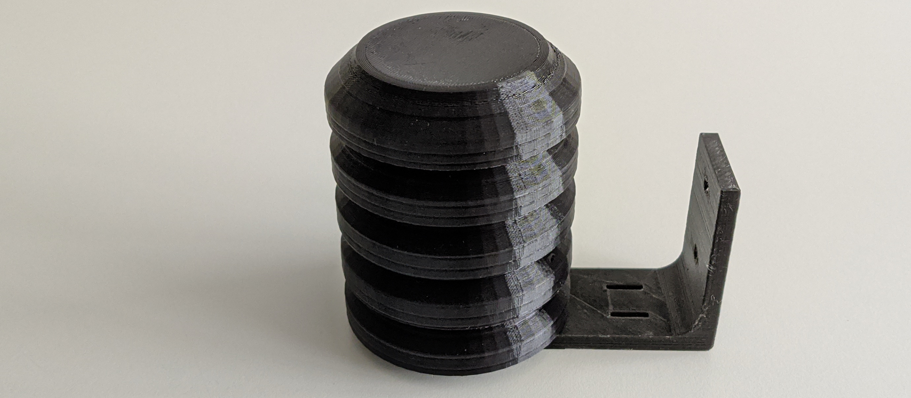
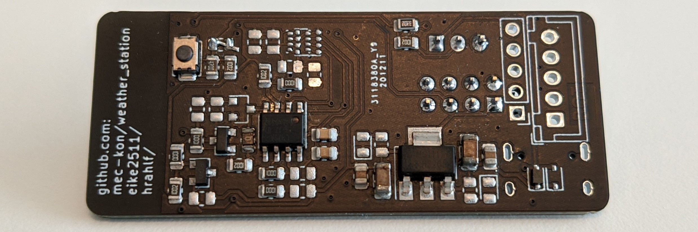

MQTT temperature sensor with a solar cell,
a lithium-ion battery and an ESP8266
This is a project to measure a temperature with an LM75 and BME680/BME280 temperature sensor, which is transmitted to an openHAB smarthome platform over WIFI via MQTT using an ESP8266 microcontroller. The temperature sensor and ESP8266 are powered by a lithium-ion battery, which is charged by a 1 Watt solar cell.
This guide is about 3D printing of a matching housing, creating a matching PCB and programming the software.
Printing a case
First, a housing is printed for the temperature sensor so it can be mounted outside and be protected from dust and water.
The picture shows the "Stevenson Screen", which is a remix from "Small Sun Screen (Stevenson Screen) for 1-wire temperature sensors" and has been additionally extended by yodatee. This item now has a suitable hole for a two-pin JST-XH connector, to which the solar cell is connected. It can be found on Thingiverse.
When printing the housing, it is important to avoid the use of black filament to prevent the measured temperature from being incorrectly measured in direct sunlight.
Power supply
The electronics is supplied by a 3800mAh battery, which is charged by a 6V/1W solar cell.
For this, a TP4056 linear battery charger is used.
This charger can be adapted for different solar modules by changing the resistor R3. To change the resistance, the available charge current of the solar cell must first be calculated.
This is calculated as following: I=P/U = 1W/6V = 170mA.
According to the data sheet the next lower available charge current is 130mA at a resistance of 10kΩ.
So the resistor R3 must be replaced by a 10kΩ resistor.
In this project, JST-XH connectors are used to connect the individual power supply components. By adding a JST-XH socket to the bottom of the housing, the solar cell can easily be connected to the housing. If the battery in the housing runs out of power, the solar cell cable can be disconnected and the battery can be charged with a charger or another battery without opening the housing.
Wiring
To charge the battery with the solar cell, a cable with a JST-XH plug must first be attached to the solar cell. Then, the matching socket is glued into the housing.
After that, the socket is connected to the two contacts on the left side of the TP4056 by cable.
The contacts B+ and B- on the right side are connected to the battery.
Since the battery has a JST-XH plug, a JST-XH socket can be used here as well.
Finally, the contacts OUT+, B+ and GND (B- and OUT-) are connected to the PCB via JST-XH plug.
The PCB Layout

The current circuit board is designed by mec-kon, eike2511 and hrahlf.
The pcb files and a detailed description be found here.
Main components of the pcb board are an ESP8266, which sends the measured temperature via MQTT over wifi, either a BME680 or BME280 sensor to measure temperature, air pressure, humidity and air quality (BME680), and a LM75 temperature sensor as backup.
Programming the software
The software can be found on GitHub
With the software, the ESP8266 sends the current temperature to openHAB every 10 minutes.
In this project, Platformio is used to program the ESP8266 microcontroller, so it must be installed.
Then, the software can be downloaded with git clone https://github.com/mec-kon/mqtt-temperature-sensor_esp8266.git.
After that, it can be navigated into the project directory with cd mqtt-temperature-sensor_esp8266.
Finally, the submodules can be initialized with git submodule update --init.
To use the software, the file src/config.h must be adapted.
To flash the finished software to the ESP01, all that remains is to run platformio run -t upload.
openHAB
The configuration of openHAB will be discussed in another tutorial